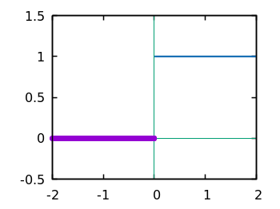

Modern Computational Methods
\(\require{cancel}\)1 Preface
There are now twice as many computing devices on the Internet as people in the world, and yet hardly anyone knows that computers and the digital world in general are based on a different sort of math than what we learned in school, namely, something called discrete mathematics. Discrete math deals with things that are separated and compartmentalized into distinct states, conditions, steps, intervals, phases; things done in chunks, bits, packets; stuff that makes beeps and clicks, goes on and off, lights up and goes dark again—rhythmically or randomly.
It's no wonder discrete math and computer science are largely unknown to the public since they're all but absent from the American secondary school curriculum, as well as much of the undergraduate years of American colleges. Another curriculum deficit is the absence of computer programming—both in high schools and college undergrad programs. Except for computer science majors, college science curricula typically follow a crash-course, if not "catch as catch can" approach to programming. For example, when this author took numerical analysis from his math department (1985), the professor offered no advice, let alone training, on how the programming assignments were to be carried out. Luckily, some of us stumbled onto FORTRAN, the world's oldest language, and hacked together our assignments, mostly by guesswork. Fast-forward thirty-odd years to today and despite better access to computers and software things haven't changed very much.
These deficiencies have been topics of discussion for many years. One light in the darkness came in the late 1980s from Gerald Sussman and Hal Abelson at MIT with their landmark textbook Structure and Interpretation of Computer Programs. Its nickname was the wizard book due to the wizardy-looking cartoon character on the cover. SICP served for many years as the text for their MIT Electrical Engineering and Computer Science course 6.001. SICP was praised by many as a nexus of computer theory and numerical application. However, its use of the functional programming language Scheme, as well as its legendary "hard" math practice exercises doomed its acceptance beyond any but the world's top university computer science programs.
Today the importance of learning computers, and especially doing math on computers cannot be emphasized enough. Simply put, virtually all real-world computation is done on computers. Gone are the days of slide rules, pocket calculators1, log and trig tables, gone even are the days of mainframe computers chugging away in some remote clean room at FORTRAN numerical programs. Today's math is done as much on consumer-class computers (like yours and mine) with both free and commercial software, as on massively parallel super computers in clean rooms.
This text aims to be a beginner's omnibus guide into the world of computer science and its unique, if not esoteric math techniques. We will also explore "regular" math in the context of the computer. If you can code it, you own it will be our motto. And to code it we'll be using the SICP standby Scheme. (See Appendix [] for installation instructions.)
Although much of this book will include beginner-friendly, on-the-fly tutoring of Scheme, it is best for users to first familiarize themselves with the basics of the language from one of the many free online tutorials:
- Simply Scheme by Cal Berkeley's Brian Harvey,
- Structure and Interpretation of Computer Programs by MIT's Hal Abelson and Gerald Sussman,
- Teach Yourself Scheme in Fixnum Days by Dorai Sitaram of Rice University,
- How to Design Programs, Second Edition by Matthias Felleisen et al. (specifically for Racket Scheme),
- An Introduction to Scheme and its Implementation by Orm Finnendahl of the Hochschule für Musik und Darstellende Kunst Frankfurt am Main,
- The Scheme Programming Language by Kent Dybvig of Indiana University
The first chapter, our ground chapter, is called Chapter Null since we will be laying out the most fundamental ideas concerning what is discrete mathematics. So if computers are doing discrete math, then what was that stuff we learned in school? What sort of math is Algebra, Geometry, and Calculus?
2 Chapter Null: Continuous versus Discrete
Shall we begin?
—Anonymous
While the math in this book will be mainly discrete, we should take a quick look at continuous math, the everyday math of physics and engineering. By noting what makes something continuous or not continuous, we will better understand why we must have this new category called discrete.
We can think of continuous math as the calculation of things smoothly changing, in continuous motion. One typical problem with continuous math is describing objects acted upon by forces, and then the paths and trajectories these objects might take. But when we say continuous, we mean smooth continuous—as in not broken up into chunks—more than we mean constant continuous. One hallmark of continuous math is its extreme accuracy. Consider the calculations necessary to send satellites such as Voyager 1 and 2 on missions into the solar system. Voyager 2 was placed into perfect orbits with both Jupiter and Saturn in order to gain speed from a gravitational "slingshot effect." Continuous math can also be deterministic in that knowing facts such as an object’s position and speed allows us to determine its precise position at a later or even an earlier time. For example, if you know a car has passed you on the road at exactly 2:00 p.m. going an ever-steady \(60\) miles per hour, you can predict it will be \(1\) mile further down the road \(1\) minute later, and then \(60\) miles further \(1\) hour later. Again, the car's motion is continuous in the sense that it is not broken up into chunks by stops.
Here’s a very simple formula for distance based on a speed and a time—assuming continuous motion:
\begin{align*} d = vt \end{align*}So if our speed is \(60\) miles per hour and our time underway is \(30\) minutes
\begin{align*} d & = \frac{60 \, miles}{hour} \cdot \frac{30 \, minutes}{1} \\ & = \frac{60 \, miles}{\cancel{hour}} \cdot \frac {1 \, \cancel{hour}}{2} \\ & = \frac{60 \, miles }{2} \\ & = 30 \, miles. \end{align*}
Figure 1: The distance :: time ratio
Just by looking at the smooth, continuous line in the graph above, we see that any increment of time, however small we might make it, will result in some new distance. For example,
\begin{align*} d & = 60 \, mph \cdot 0.50001 \, hours \\ & = 30.0006 \, miles \end{align*}or roughly \(30\) miles and a few inches, which, again, our graph can tell you—if you enlarge it or use a magnifying glass on it. This means we can chart an infinitesimally short amount of distance traveled from an infinitesimally short increase in time from the last time we did the calculation. So when we speak of something being continuous, it usually means that input and output are plottable on a very finely divided line—so fine that it is, practically speaking, no longer individual jagged, stop-and-go stair steps, rather, a smooth, continuous line. This may seem obvious, but it was a big philosophical conundrum for a long time, a mathematical paradox, as they say. Now, should we consider the change from \(30\) miles to \(30.0001\) a "bump-up," i.e., an abrupt jump that looks like a stair step? Maybe? What about a change in time that results in a change from \(30\) miles to \(30.00000000001\) miles? That would only be adding \(0.000000634\) (6.34e-7) inches….
One mathematical construct or model for such finely divided or differentiated things is the real number line. For all intents and purposes, the fineness, the granularity, the number of “ticks” on a time line should map or correspond exactly to the infinite number of points or “spots” on the real number line. Said differently, each tick of a clock—however short the ticking intervals are—will have a sister place on the real number line. But again, how small do the changes from one spot to the next have to be in order to start calling it a smooth slope rather than a jagged stair step?2
So we're beginning to have a usable idea of what a continuous phenomenon is. In algebra you probably discussed all sorts of continuous functions. But then you might have seen something like this:
\begin{align*} f(x) = \frac{1}{x} \end{align*}
Figure 2: Y approaches infinity as X approaches 0
Here we notice that as we try to plot the function from negative \(x\) to \(0\) there doesn’t seem to be a value for \(f(x) = 1/x\) right at \(x = 0\) —which is, of course, consistent with what we’ve learned in math, namely, that to divide by zero is undefined, i.e., impossible, meaning there cannot be a value at \(x = 0\), which therefore means \(1/x\) is not continuous. The result is a graph that clearly goes crazy up close on either side of \(0\). Your algebra course probably included this in the mix just to show you an oddity, but there are many phenomena do not progress in a continuously incremental way. Consider this graph:

Figure 3: Big stair-step, but still continuous
What sort of function would produce such a graph? Maybe you recall something like \(f(x) = 3\), which would simply be a straight horizontal line at \(y = 3\). But what sort of function would suddenly jog up and over? Consider
\begin{align*} s(x) = \left\{ \begin{array} {r@{\quad \mathrm{if} \quad}l} 1 & \, x \geq 0, \\ \!\! 0 & x < 0 \end{array} \right . \end{align*}This representation makes sense, even though it doesn’t seem to actually be discontinuous. But then consider
\begin{align*} s(x) = \left\{ \begin{array} {r@{\quad \mathrm{if} \quad}l} 0.03 & \, x \geq 0, \\ \!\! -0.03 & x < 0 \end{array} \right . \end{align*}
Figure 4: Smaller stair-step, still continuous
So if we keep making the two conditions closer and closer, the jog from the lower section to the higher will get smaller . . . until it collapses back to our normal-looking \(f(x) = 0\)
\begin{align*} s(x) = \left\{ \begin{array} {r@{\quad \mathrm{if} \quad}l} 0.003 & \, x \geq 0, \\ \!\! -0.003 & x < 0 \end{array} \right . \end{align*}
Figure 5: Tiny stair-step, still continuous
Now it’s barely discernible. What about excluding \(0\) as we did with \(f(x) = 1/x\)?
\begin{align*} s(x) = \left\{ \begin{array} {r@{\quad \mathrm{if} \quad}l} 0 & \, -2 < x < 0, \\ \!\! 1 & 0 < x < 2 \end{array} \right . \end{align*}
Figure 6: No longer continuous
Here we have the discontinuity at \(0\) not dissimilar to \(f(x) = 1/x\). Notice also that these last few functions are defined by breaking up their behavior over separate intervals. Instead of just one interruption calling for two conditions, we might have many interruptions and many conditions…
\begin{align*} s(x) = \left\{ \begin{array} {r@{\quad \mathrm{if} \quad}l} 0 & \, -2 < x < 0, \\ \!\! 1 & 0 < x < 2, \\ \!\! 2 & 2 < x < 4, \\ \!\! 3 & 4 < x < 6. \end{array} \right . \end{align*}…but at some point we should switch to a different notation and depiction.
The World of Discrete Mathematics
On the other hand, discrete math deals with separate, discrete processes, i.e., things that are usually represented with integers, systems of finite, non-smoothly associated objects—jagged stuff. One example of discrete is the simple idea of on or off, yes or no, \(1\) or \(0\). The state of such a system jumps from one condition to another.
To go from the world of continuous to discrete, sometimes all we need to do is simplify. Consider this "regular" map

Figure 7: Google map of Manhattan and the East River
then these two subway maps:
Figure 8: Thematic maps of New York City's subway system
Most of us have seen these sorts of subway maps. They're a type of thematic map. Basically, we go from a map on which we could do real-world, continuous calculations—such as measure exact distances—down to simplified view emphasizing a theme on which we wish to focus. Comparing the maps in Figure 8, we see that the map on the left is simplified, or stylized to the point of not really representing the geographical truth of that part of New York City as does the Google map. But then the map on the right seems a bit stylized as well, even though it shows much better, for example, what the actual course of the subway tracks might be. And yet the map on the left has everything we really need:
- the subway lines
- the subway stops
- some of the major streets associated with the subway lines
- roughly where the subway lines are geographically…
…where "roughly" is probably good enough, right? Which map do you like best? It's probably a matter of taste. Again, neither of the subway maps could be called accurate for exact measurements. However, the bright-and-simple mapping style depicted on the left has come to dominate subway maps. Now, let's see a really clever simplification from the early eighteenth century called The Seven Bridges of Königsberg by the Swiss mathematician Leonhard Euler.
Figure 9: The seven bridges of Königsberg
Looking at the three images above, it seems the last image has no real geography to it at all. But if you study how the original map is thematically stylized into the middle map, then you might be ready for the next leap of abstraction, namely, that the whole issue of land, rivers, and bridges can be reduced to something of points and lines—with no concern for its reality geographically. This was quite the sensation back in the 1730s
But to what end are we making this crazy spatial abstraction? It turns out the main motivation for this geography-free diagram was the simple question of whether a person could walk across each and every bridge in succession and get back to the starting point—without retracing, i.e., recrossing a bridge.
The Seven Bridges of Königsberg problem is considered the birth of graph theory, a prominent member of the discrete mathematics family. A graph in this context is not a Cartesian graph, but a set of points, or, technically, vertices (singular: vertex3) and the lines, or, technically edges that connect the vertices.
Consider a coin-operated turnstile4. You put a coin or token in and it allows you to push through the metal bar; otherwise, the bar blocks your passage.

Figure 10: Torniquet-style turnstile
We can model a pay turnstile as a system with two states: locked and unlocked. Let's look at a table:
| Current State | Input | Next State | Output |
|---|---|---|---|
| Locked | coin | Unlocked | Unlocks the turnstile so that the customer can push through. |
| push | Locked | None | |
| Unlocked | coin | Unlocked | None |
| push | Locked | When the customer has pushed through, locks the turnstile. |
3 The so-called real-world
In regular math we see functions, expressions, equations. A function is a statement, an equation is a statement, a mathematical expression is also a statement of some mathematical relationship, hopefully accurate and true. Math builds, derives, juxtaposes functions, expressions, equations to get at some basic, fundamental truth of the matter at hand. With an equation like \(y = y_0e^{kt}\) we see a factory

Figure 11: Courtesy of Wikimedia Commons
{kind=link}
of sorts that takes a thing \(y\), perhaps a bacteria blob—at an initial starting time \(t = 0\), that is, the blob's state at $y_0$—and multiplies it by Euler's "magic" constant \(e\) raised to the power of \(kt\), where \(t\) is time and \(k\) is a constant, i.e., \(e^{kt}\). What is this for? What does it do? Well, to begin answering this question many mathematics teachers would first want their students to know where the equation came from—maybe not the whole historical rendition of when and who plucked it out of the mathematical void—but students should see that it is derived using valid, mathematically-legal substitutions and simplifications from a more basic mathematical statement
\begin{align*} \frac{dy}{dt} = ky \end{align*}. . . then the students do some homework problems, and maybe see in on a test. And there the ball stops—until a day comes when one of them must use the exponential rate of growth (or decay) dependent on initial size formula in a real-world setting—invariably on a computer; invariably in a much messier situation than the Calculus text problem set.
We will use the language Racket the computerization of math and numerical things Emacs Lisp is a "dialect" of Common Lisp, which means it does a few things slightly different than mainstream Common Lisp, but is still a Lisp programming language. Why should we use Emacs Lisp? Because it is tightly integrated with the editor we will use, Emacs. And why should we use Lisp? Because it is a very powerful language with a long and storied history. Some people say Lisp is the most powerful language.
Being a Lisp, Elisp, as Emacs Lisp is nicknamed, comes from a long tradition of higher-level research computer science. Lisp (an acronym for LISt Processor) is very old (only Fortran is older) and is based on functional and declarative computing paradigms. What is a functional and a declarative programming language? We will explore these concepts as we learn Elisp. But for now just think of a regular mathematical function such as
\begin{align*} f(x) = x^2. \end{align*}The first thing we see is that we declare rather than describe imperatively a relationship. Before the Persian scholar al-Khwarizmi of the ninth century, mathematics could be rather wordy. Al-Khwarizmi is credited with starting Algebra, which is based on the concept of symbols such as letters representing numbers. Therefore, we can write
→ take 5 from the user and store it in a memory location
→ make a copy of 5 and put it in a new memory location
→ multiply 5 and 5 together and put the answer 25 in a memory location
→ present the answer 25 to the screen
as
(defun f (x) (* x x))
Footnotes:
Warning: Soapbox rant! Pocket calculators (often referred to as "graphing calculators") are dinosaurs from the dustbin of history. This author relies on all-free software running on the GNU/Linux operating system, which, in turn, is running on a used laptop from Ebay. For the price of a "graphing calculator" you can have what you really should have, i.e., a real computer running world-class, state-of-the-art STEM software. And this is not just my opinion. In fact, the elite universities and research entities rely on exactly what I'm using now, which, again, cost me less than a high-end calculator.
For a small experiment, grab a magnifying glass and look at the diagonal line in the first diagram. You should see jaggies, or the effects from computer screens being, in fact, made up of millions of individual pixels. "Aha!" you might say, "so this isn't continuous after all!" To be sure, the concept of continuous and discrete can be slippery, especially when it comes to their depiction.
Borrowed from Wikipedia's "Finite-state machine" article.